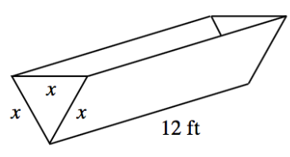
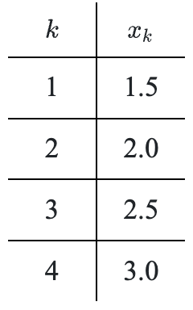

Simplify each of the following complex fractions.
\(\Large \frac { \frac { 4 } { x } - \frac { 5 } { 3 x ^ { 2 } } } { \frac { 8 } { x ^ { 2 } } + 6 }\)
\(\large \frac{x^{-1}+8}{x+y^{-2}}\)
Use substitution to help you factor each of the following expressions. First state what the substitution is (that is, write what \(u\) equals), then factor. Be sure to write your final answer in terms of \(x\).
\(5\cos^2(x)-9\cos(x)-2\)
\((4x-1)^2+12(4x-1)+20\)
\(7^{2x}+4(7^x)-12\)
\(4x^{8/3}+11x^{4/3}+6\)
Rewrite each complex fraction as a single fraction without negative exponents.
\(\large \frac { t + \frac { 1 } { t } } { t }\)
\(\large \frac { 1 } { x + \frac { y ^ { 2 } } { x } }\)
\(\large \frac { \frac { \sqrt { 3 } } { 2 } } { \frac { 1 } { 2 } }\)
Factor out \((x+2)\) from each expression, then simplify. If needed, let \(u=x+2\).
\((x+2)^2-3(x+2)\)
\((x+2)^3-4(x+2)\)
\(2(x+2)^2+6(x+2)\)
Simplify each of the following rational expressions.
\(\frac { x + 2 } { 4 } + \frac { x - 3 } { 5 }\)
\(\frac { 4 } { 2 - x } + \frac { x } { 5 }\)
\(\frac { 6 } { x + 2 } - \frac { 4 } { x - 2 }\)
Solve each equation for \(0\le x<2\pi\). Give exact answers.
\(\sin(x)(\cos(x)+1)=0\)
\(\cos(x)(\tan(x)-1)=0\)
If \(f(x)=2^{x-1}+4x^2\), write an equation for\(f(x+2)\).
A trough is in the shape of an equilateral triangular prism, as shown in the diagram shown. The length of the trough is \(12\) feet.
Write an equation for the height of the equilateral triangle in terms of \(x\).
Write an equation for the volume \(V\) of the trough in terms of \(x\).
If the trough can hold \(200\text{ ft}^3\) of water, how deep is the trough?

Use the table shown to write an equation for \(x_k\) in terms of \(k\).

As the connected complexity of mathematical concepts evolve, your mathematical knowledge evolves as well. Previous knowledge provides the necessary skills to acquire new learning. If necessary, review the Solving Linear and Quadratic Systems of Equations Skill Builder, to strengthen your understanding of this topic.
Solve each system of equations.
\(p^2+2p+q=24\)
\(2q+p=4\)
\(x^2+2y=1\)
\(2x-y=2\)